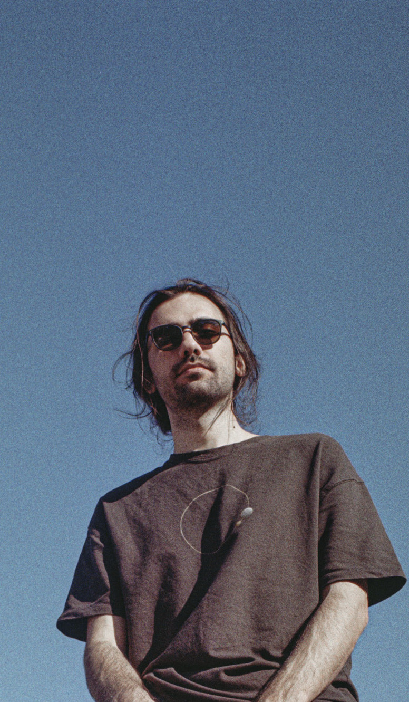

About Me
I am a multidisciplinary artist dedicated to exploring the intersection of rhythm, sound, and image. My journey began with a focus on jazz drums, studying under the guidance of Emre Kartari at Yaşar University's Jazz Performance department. While jazz remains my core discipline, my professional experience over the last 15 years has spanned a wide musical spectrum, from the raw energy of punk-rock to the nuanced world of electronic sufism.
This diverse musical foundation sparked a deeper curiosity for sound itself, leading me into the world of production. In my solo project, Mindown, I delve into sampling and sound design, crafting entire sonic landscapes from scratch. This work has led to professional opportunities, including creating the intro jingle and handling sound recording for the popular YouTube show Katarsis, as well as contributing to various documentary projects.
My current artistic practice focuses on translating rhythm into a visual language in my personal performances. My approach to education, in turn, transforms this exploration into a methodology for the student: Modern systems I've developed, like A&R+ and ToT+, use classic drum methods as a starting point. My goal is not to teach a standard curriculum, but to challenge every student to push their own limits, create their own curriculum in the process, and ultimately, build their own authentic rhythmic identity.